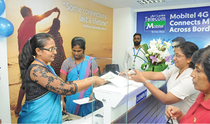
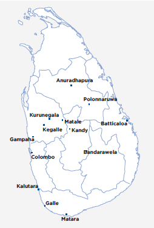
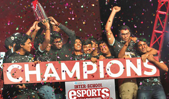
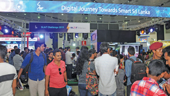

Management Discussion and Analysis
Customer Capital


With over seven million customers across the country ranging from individuals to small and medium enterprises (SMEs), multinational corporates, and the public sector, the SLT Group is dedicated to providing innovative solutions that utilise state-of-the-art technology and infrastructure. As part of SLT’s transformation into the digital service provider of choice, SLT has laid the foundation for quality service and superior customer experience, recognising that this is fundamental to customer loyalty and retention in an intensely competitive market subject to disruption and transformation.
Product Portfolio
| Sri Lanka Telecom | ||||||||||||||||||||||||||||||||||||||||||||||||||||||||||||||||||||||||||||||
|
Fibre (FTTx) SLT offers customers the highest download speeds in the country of up to 1 Gbps and the highest monthly data volumes of up to 3 TB. |
4G LTE SLT 4G LTE offers average download speeds up to 8 Mbps and burst speeds up to 40 Mbps with monthly data volumes of up to 3 TB. |
ADSL SLT ADSL broadband offers speeds of up to 21 Mbps and monthly data volumes of up to 3 TB. |
||||||||||||||||||||||||||||||||||||||||||||||||||||||||||||||||||||||||||||
|
SLT broadband customers can access SLT Wi-Fi hotspots around the country with their existing credentials or purchase prepaid access cards, enabling them to access high-speed data in public areas such as shopping malls. The SLT Public Wi-Fi mobile app enables users to easily connect to these hotspots. |
The SLT eSports Platform is a dedicated gaming network that enables customers to enjoy low latency in online multiplayer games where latency is critical to a player’s performance. The platform allows customers to create and manage game tournaments, participate in free and premium tournaments, and win prizes in a variety of popular games. |
SLT Digisolutions enables customers to transform their homes into smart homes through IP cameras, wireless smart alarms, smart motion detectors, and more. |
||||||||||||||||||||||||||||||||||||||||||||||||||||||||||||||||||||||||||||
| SLT launched Sri Lanka’s first purpose built state-of-the-art Tier III Data Centre in Pitipana, Homagama in 2018. The facility, the “National Data Centre”, provides secure and reliable data hosting and cloud computing services and is South Asia’s first data centre capable of supporting Network Function Virtualisation (NFV) and Software Defined Networking (SDN) environments. SLT’s data centres and cloud platform offer enterprises a scalable and cost-effective alternative to deploying dedicated computing resources in-house. | SLT’s state-of-the-art data centre offers hosting solutions for customers that meet a diverse range of personal and business requirements, including DNS hosting, domain name registration, and mail server solutions. | |||||||||||||||||||||||||||||||||||||||||||||||||||||||||||||||||||||||||||||
SLT has partnered with 27 ICT solution providers to offer comprehensive solutions to SMEs.
|
||||||||||||||||||||||||||||||||||||||||||||||||||||||||||||||||||||||||||||||

|
||||||||||||||||||||||||||||||||||||||||||||||||||||||||||||||||||||||||||||||
|
Powered by SLT Akaza Cloud, SLT Storage allows users to access their files on the go through the SLT Storage app, automatically sync files and folders to their desktop, and backup their Android phone contacts and messages. SLT Storage offers a built-in search engine and the lowest storage prices in the market. |
Recognising that online transactions continue to increase and are becoming a significant part of the global economy, SLT introduced “Pay with SLT” to its digital portfolio. SLT customers will be able to purchase products and services online from SLT-registered merchants and have the payable amount added to their monthly SLT bill. Customers can benefit from a credit period offered by SLT, as well as peace of mind through the safe and secure mode of payment. |
SLT launched the Selfcare mobile app for Apple iOS and Android platforms that offers an array of benefits to SLT broadband customers. The app notifies customers of details such as data limits, data usage and daily usage patterns, remaining data, and a summary of data usage by application (Facebook, YouTube, Gmail, etc.). Customers can also add extra data from the app and choose to pay immediately or add the amount to their monthly bill. |
||||||||||||||||||||||||||||||||||||||||||||||||||||||||||||||||||||||||||||
|
SLT Smart Home solutions are designed to allow homeowners to control the lighting, climate, entertainment systems, appliances, devices, power, sensors, curtains, home security systems, and many more devices in their homes through a central hub, with a user interface available on their phones, tablets, desktop computers, or a web interface accessible off-site via the internet. SLT Smart Home solutions are suitable for owners and tenants of luxury apartments, large scale industry builders, and engineering and architectural communities in the country. |
SLT CCTV is a camera surveillance domestic security solution that enables customers to remotely monitor their premises through a web portal of mobile app. SLT also provides cloud storage for the footage through the SLT Akaza cloud storage platform, reducing the requirement for storage and other hardware at the customer premises. Customers can select packages that suit a range of budgets and residences. |
SLT Voice is a SIP/Voice over IP (VoIP) phone app developed exclusively for SLT Megaline, SLT Fibre, and SLT 4G users to use in tandem with SLT voice services. The app enables customers to connect up to four smart devices to their fixed line and make calls on their device through their SLT fixed line. The app seamlessly integrates the smart device into the household phone system and acts like any ordinary fixed phone line. Customers benefit from not having to invest in additional phones for their household and use the value-added services from their SLT fixed line, including free minutes, while seamlessly using the features of their smart device such as contact lists and call logs. |
||||||||||||||||||||||||||||||||||||||||||||||||||||||||||||||||||||||||||||
With the increased adoption of smartphones, mobile games have also become increasingly popular; Sri Lanka has an estimated five million gamers across mobile and PC platforms. Realising the potential to reach and engage an incredible number of users, SLT launched a casual game for SLT customers. Both SLT and non-SLT customers can play Kimaki and win prizes based on their performance in the game. |
Tele Health Insurance is a special medical insurance scheme provided in collaboration with Ceylinco General Insurance Limited exclusively to SLT customers. The Tele Health policy cover provides financial assistance for hospitalisation in any government hospital, registered private hospital/nursing home, or any other approved government/private Ayurveda hospital as an in-patient as a result of sustaining accidental bodily injury, any sickness or illness, or any type of surgery. The insurance scheme offers covers with monthly premiums that can be settled in the monthly SLT bill and eliminates the need to fill application forms. Insurance cover is also available to the spouse and children of subscribers. |
|||||||||||||||||||||||||||||||||||||||||||||||||||||||||||||||||||||||||||||
| Xyntac | ||||||||||||||||||||||||||||||||||||||||||||||||||||||||||||||||||||||||||||||
|
|
||||||||||||||||||||||||||||||||||||||||||||||||||||||||||||||||||||||||||||||
|
|
Xyntac, the Global unit of Sri Lanka Telecom is an evolving digital communications ecosystem that delivers carrier-grade voice and data solutions to businesses around the globe. Expansive fiber networks, submarine cable systems and international partnerships allow clients to take advantage of the limitless possibilities of cross-border connectivity and innovative ICT solutions. | |||||||||||||||||||||||||||||||||||||||||||||||||||||||||||||||||||||||||||||
|
Global Network Solutions Global submarine cable capacity requirements have increased up to 500 times over the past 10 years and this trend continues as Virtual Reality, Augmented Reality and Internet of Things are becoming mainstream for global capacity requirements. To cater this emerging capacity demand, Xyntac has already diversified its submarine cable network. Xyntac submarine cable network comprises of its consortium cables SEA-ME-WE 5, SEA-ME-WE 4, SEA-ME-WE 3, private cables connecting to Maldives and India & partner cables around the globe and capable of providing submarine cable capacities up to multiples of 100Gbps. |
P2P Connectivity |
|
|||||||||||||||||||||||||||||||||||||||||||||||||||||||||||||||||||||||||||
|
Global VPN Services |
Internet Services |
Voice Services |
|
||||||||||||||||||||||||||||||||||||||||||||||||||||||||||||||||||||||||||
|
Cloud Services |
Co-location Services
|
|
|||||||||||||||||||||||||||||||||||||||||||||||||||||||||||||||||||||||||||
Managed Services
|
||||||||||||||||||||||||||||||||||||||||||||||||||||||||||||||||||||||||||||||
| Mobitel | ||||||||||||||||||||||||||||||||||||||||||||||||||||||||||||||||||||||||||||||

|

|
|||||||||||||||||||||||||||||||||||||||||||||||||||||||||||||||||||||||||||||
| Mobitel offers prepaid and post-paid mobile telephone connections, as well as 4G LTE broadband packages. |
Mobitel offers a variety of solutions that can enhance productivity and value for small businesses and large enterprises.
These include:
|
Mobitel is an authorised Cloud Solutions Provider for:
|
||||||||||||||||||||||||||||||||||||||||||||||||||||||||||||||||||||||||||||
| SLT VisionCom | ||||||||||||||||||||||||||||||||||||||||||||||||||||||||||||||||||||||||||||||
PEO TV brings the latest on news, entertainment and education from around the world through an interactive platform offering 48 hours of Rewind TV, Video on demand and Subscription Video on Demand. PEO TV differentiated its offering by introducing Picture-in-Picture, Music on Demand, Education on Demand and many other TV applications for the first time in Sri Lanka. Customers can watch over 140 TV channels with a selection of HD Content. The On Demand library offers a large number of Sinhala, Hindi, Tamil, English, Malayalam, and Telugu movies. |
Launched in April 2019, PEO TV Go enables customers to enjoy their favourite PEO TV content on any device anywhere they are at any time. The PEO TV Go app will be made available to any customer over any network in 2020. |
SLT launched PEO TV Biz, providing a multiple TV solution to cater to the requirements of small and medium enterprises in the country. The service is available in two formats: Multiple PEO TV via FTTH to provide up to three TV points, and Enterprise PEO TV via dedicated fibre to provide over 15 TV points. |
||||||||||||||||||||||||||||||||||||||||||||||||||||||||||||||||||||||||||||
Charana TV is a PEO TV channel dedicated to a variety of Sri Lankan Content; the channel became the 7th most viewed channel on PEO TV within a year of its launch. Charana TV differentiates itself from the rest, by broadcasting more educational and informational programmes keeping to its identity set from the beginning and offers a wide variety of programmes from Music, Entertainment, Movies, Talk Shows, Life style with many other novel initiatives brought to TV screen to respect the diversity of the country. In 2019, a fully-fledged studio was opened to boost the creation of local content. The launch of a YouTube channel further expanded the reach of the channel. |
Helawood Popcorn is a website, a cinematic cyber space launched to capture the diverse flavors of local and international entertainment in one platform. Connects lovers of Sri Lankan cinema and get them to engage in discussions about the history and future of Sri Lankan Cinema. |
|||||||||||||||||||||||||||||||||||||||||||||||||||||||||||||||||||||||||||||
|
SLT VisionCom launched the SLT Group Watch channel, which serves as the default channel when a viewer boots up their PEO TV set-top box. The channel serves the customer to get acquainted with updates on SLT products, services and important updates on Technology and beyond. |
Event TV is a dedicated channel for events; the channel enables entities to broadcast their live and recorded telecasts in high definition at a nominal cost. |
|||||||||||||||||||||||||||||||||||||||||||||||||||||||||||||||||||||||||||||
|
Videsa 6-11 Bouquet offers a dedicated educational channel for each grade, from grade 6 to 11 covering a wider spectrum of school curriculum in each grade. |
EOD (Education on demand) offers students the convenience to take their lessons at any time they need and to capture the important areas in lessons. EOD on PEO TV provides Content from many educational content providers such as Candela Learning, Guru and many other specialists. |
|||||||||||||||||||||||||||||||||||||||||||||||||||||||||||||||||||||||||||||
| Sri Lanka Telecom Services | ||||||||||||||||||||||||||||||||||||||||||||||||||||||||||||||||||||||||||||||
This business unit is charged with executing all the outside plant related projects. The scope of its activities include planning, designing and commissioning. The following are the main projects the division has undertaken in the year under review:
|
||||||||||||||||||||||||||||||||||||||||||||||||||||||||||||||||||||||||||||||
| ELV system solutions (Extra Low Voltage system projects) The services that the Division provides include total ELV system solutions using both UTP and fiber with state-of-the-art voice and data copper cabling systems, as well as cost-effective total power solutions for industry networks on par with industry standards. These solutions include structured cabling, surveillance, PABX, PA (Public addressing), Access control & Door phone systems, IPTV/MATV, Carpark management and BMS (Building management systems) |
Surveillance Systems
We also offer complete CCTV and IP-based surveillance systems that encompass all the monitoring requirements of clients. Solutions can be catered to the requirements of clients ranging from a small home to a large corporation. |
|||||||||||||||||||||||||||||||||||||||||||||||||||||||||||||||||||||||||||||
|
Enterprise Switching, Routing, and Wireless
SLTS provides network equipment to clients including enterprise switching, routing, and wireless equipment. SLTS enterprise network solutions and enterprise wireless solutions can help clients to accelerate innovation while enhancing security and other benefits while reducing the cost and complexity. |
Server and Storage Solutions
Our capabilities enable us to offer various storage solutions suitable for server consolidation and virtualisation environments with high performance and high availability to our clients.. |
Unified Communication Solutions Complete unified communication solutions (PABX solutions) including IP-based PABX systems that encompass all the internal communication requirements of clients are also on offer. Solutions can be catered to the requirements of clients ranging from a small home to a large corporation. |
||||||||||||||||||||||||||||||||||||||||||||||||||||||||||||||||||||||||||||
|
IT Security Solutions
Our services portfolio also includes IT security solutions for clients, including firewalls, antivirus and messaging security, and securing data and information from malware threats. |
||||||||||||||||||||||||||||||||||||||||||||||||||||||||||||||||||||||||||||||
| Smart Application Solutions | ||||||||||||||||||||||||||||||||||||||||||||||||||||||||||||||||||||||||||||||
| Enterprise Resource Planning Solutions SLTS Total Enterprise System (TES) is an Enterprise Resource Planning (ERP) system that can manage the entire informational requirement across an organisation. The system integrates all organisational departments including financial/accounting, marketing, sales and customer relationship management, manufacturing, and more into a single point and can automate all activities through an integrated software application. TES is a total web-based system with a database repository backend that can run under different hardware and network environments, including virtualised or hosted services. |
Web Solutions The SLTS web development team handles website design for clients, as well as web-based system development, website maintenance and support services. SLTS can cater to clients of varying sizes from small, home-based businesses to larger corporate and government organisations. |
|||||||||||||||||||||||||||||||||||||||||||||||||||||||||||||||||||||||||||||
| Banking Solutions SLTS has developed a Micro Finance and Banking Solution which can address all the micro financing application requirements, called “Easy Bank” that goes beyond core banking to provide an integrated banking system solution. |
||||||||||||||||||||||||||||||||||||||||||||||||||||||||||||||||||||||||||||||
| SLT Digital Info Services | ||||||||||||||||||||||||||||||||||||||||||||||||||||||||||||||||||||||||||||||

|
||||||||||||||||||||||||||||||||||||||||||||||||||||||||||||||||||||||||||||||
| The Rainbow Pages directory contains over 15,000 listings and is the only National Business directory in Sri Lanka. The latest version of the Western Province directory was released in December 2019. | RainbowPages.lk is one of the most frequently visited websites for purposeful business searches in Sri Lanka with over 10,000 daily visitors and an Alexa ranking in the 200-range. 2019 saw the website upgraded with improvements to the search logic, the addition of products and services search functionality, and search engine optimisation. | The Rainbow Pages mobile app was launched early on in Sri Lanka’s smartphone and mobile apps revolution. Since then, smartphones and mobile apps have evolved tremendously and SLTDS is transforming the app for modern devices, with an expected launch in 2020. | ||||||||||||||||||||||||||||||||||||||||||||||||||||||||||||||||||||||||||||
| The Wedding Directory and Tourist Directory websites are dedicated directory vertical websites created by SLTDS to cater to two key industries in Sri Lanka. The vertical directories provide a unique platform for advertisers to promote their brands and products, and a one-stop website for customers searching for information about these two industries. | The SLTDS Events Team handles over 300 events and activations on behalf of SLT. In 2020, the Team will start offering its services to organisations outside of SLT. |
Digital services are centred around digital marketing and web creations. Products include:
|
||||||||||||||||||||||||||||||||||||||||||||||||||||||||||||||||||||||||||||
| SLTDS launched SLT Muve in June 2019. SLT Muve is a ride sharing service fully powered by SLT that aims to rectify issues in the industry around fairness, reliability, quality, and value for money through a robust app with 24-hour support centre for riders and drivers, strong privacy protocols, driver training, and clean and safe vehicles. | ||||||||||||||||||||||||||||||||||||||||||||||||||||||||||||||||||||||||||||||
| SLT Human Capital Solutions | ||||||||||||||||||||||||||||||||||||||||||||||||||||||||||||||||||||||||||||||
| HCS provides convenient contact centre solutions using sophisticated phone system software, trained staff, and infrastructure facilities to help clients operate their business smoothly. | Using the in-house developed Human Resource Information System, “Headspace”, SLT Human Capital Solutions can model the entire employee lifecycle and provide information dispatch and collection using mobile technologies. | HCS offers holistic consultancy services for all business functions such as HR, marketing, project management, and financial management. Fully-qualified consultants can assist clients with strategically integrating effective HR processes, programmes, and practices. | ||||||||||||||||||||||||||||||||||||||||||||||||||||||||||||||||||||||||||||
| HCS specialises in the recruitment of professional employees from Sri Lanka to fill vacancies anywhere in the world. | ||||||||||||||||||||||||||||||||||||||||||||||||||||||||||||||||||||||||||||||
| SLT Campus | ||||||||||||||||||||||||||||||||||||||||||||||||||||||||||||||||||||||||||||||

Customer experience management
Customer Service Week 2019
SLT successfully conducted its second Customer Service Week (CSW) in parallel to the International Customer Service Week celebrated the world over between 7-11 October. The theme for 2019 was “You are our Pride” and the event was held with the aim of recognising and appreciating SLT’s loyal customers and employees who serve the Company’s customers.
This year’s theme was a reflection on the importance placed by the Company on its customers and the employees who are committed to serving those customers on a daily basis, with emphasis on the fact that employees and customers together are what make up the true pride of SLT and are the true reason behind the Company’s continued success. A series of programmes and activities were held during CSW 2019 to pay tribute to customers and employees, including customer visits to identify any issues or areas of improvement, visits to employees in regional offices to recognise and appreciate their contribution to serving customers, and a special tech talk, “Geek Speekz”, held at the Hilton Colombo.
Geek Speekz was organised to appreciate and thank SLT’s enterprise and Government sector customers. The event was a great success, with many corporates sharing their individual digital roadmaps that they have put in place to support the transformation of Sri Lanka into a digital economy.
The CSW 2019 closing ceremony saw the highest participation, with 25 teams from SLT’s customer touchpoints being recognised and rewarded for their commitment and passion towards ensuring customer service excellence.
Customer Satisfaction Survey
In the year under review, SLT continued the practice of conducting a customer satisfaction survey. The services of a reputed research agency were obtained for this purpose which ensured that the survey was conducted with a high degree of professionalism. We can be assured of its objectivity, quality assurance the accuracy of data collection and the conclusions. Our Customer Satisfaction Index retained its previous 83% level, while the Net Promoter Score increased 2 points year-on-year to reach 40. A diverse and representative sample including all customer segments (SME, enterprise and consumer), business verticals and geographical areas was used for the survey, which gives further confidence in the accuracy of the results. The methodology used was a face-to-face 30-45 minute interview followed by a comprehensive questionnaire.
Customer voice survey
SLT regularly conducts a customer voice survey to better understand the sentiments of its customers towards the Company’s customer service. The survey provides insights on customer satisfaction on service delivery and fulfilment. During the period under review, SLT registered 93% overall satisfaction on the time taken to resolve customer complaints, with 85% of customer complaints attended to within the committed timeframe.
Mystery audit 2019
Mystery audits were conducted during the year at all branches across the island. The audit tested the performance of Regional Telecom Offices, Teleshops, and franchise branches across four dimensions:
1. Convenience of branch (exterior) 2. Convenience of branch (interior) 3. Staff member grooming and responsiveness 4. Service – only for inquiriesThe objective of the mystery audits was to discover service delivery gaps in order to facilitate continuous improvements to the customer experience, which SLT believes to be the key business differentiator in the competitive business environment of today.

SLT conducts a mystery caller survey to measure customer satisfaction with the Contact Centre. The performance of the Contact Centre is evaluated across four dimensions:
1. Convenience of automated service 2. Telephone etiquette 3. Service 4. Contact Centre agent knowledgeContact Centre
The SLT Contact Centre functions 24x7 hours conducting business across two arms: SLT customer service via the 1212 hotline and other digital channels such as social media, email, Web chat and IVR automation, as well as the BPO business that provides contact centre solutions to external organisations.
13 stations across the country operate the customer service hotline with 300 skilled officers who possess bilingual capabilities. Six BPO contact centres with 140 full-time officers provide customer service to various business sectors such as insurance, banking, food and beverages, utility, and government services. The Contact Centre received nine million calls in 2019, with an average of 21,000 calls handled per day.

SLT Digital Forums
We host a range of digital forums that serve as a knowledge-sharing and networking platform that positions the Company within the digital services space. SLT Digital Forums bring together domain experts and representatives from private sector organisations, public institutions, and academia to discuss their ideas and experiences of the evolving digital services ecosystem.
Marketing campaigns
SLT Speed-up Cycle Sawariya
The sporting events we organised included the longest cycle race in Sri Lanka, “SLT Speed-up Sawariya 2019”, in September 2019. The Men’s race started from Galle Face Green on 24 September through Panadura, Ratnapura, Embilipitiya, Wellawaya, Bandarawela, Nuwara Eliya, Kandy, Kurunegala, Anuradhapura, Vauniya, Trincomalee, and finished in Dambulla on 28 September. The Women’s race commenced in Colombo on 27 September and travelled through Kurunegala, finishing in Dambulla on 28 September. The event marked yet another milestone in the country’s cycling journey with the first ever competitive cycling event held for juniors on 28 September, starting from Dambulla and travelling through Kekirawa and Habarana to Dambulla. The locations across all nine provinces of the country symbolises the SLT broadband backbone that runs throughout the country.
SLT Speed-up Karting Challenge 2019
SLT partnered with Sri Lanka Karting Circuit, Bandaragama (SLKC) to promote the “SLT Speed-up Karting Challenge 2019” to provide the public with a novel sporting experience. Aligning with the widely acclaimed “SLT Speed-up” programme started in 2015, the Karting Challenge took place in July 2019. As Title Sponsor of the event, SLT aimed to meet the growing demand for activity-based leisure experiences while contributing to expand the market for sports tourism, an emerging sector with promising benefits for the country.
SLT eSports Women’s Championship
Sri Lanka’s first ever eSporting event, catering solely to women e-gamers, was held in April 2019. The event was powered by SLT’s ultra-fast broadband internet. With the event, SLT endeavoured to motivate and encourage more women gamers to get involved in e-sports.
Inter-University eSports Championship 2019
The grand finale of the Inter-University
eSports Championship was another event powered by SLT Fibre. Over 50 leading government and private universities and educational institutes participated in this event.
Inter-School eSports Championship 2019
Ultra high Speed SLT Fibre powered the 4th annual Inter-School eSports Championship. As the Title Sponsor and broadband connectivity provider for the championship, SLT Fibre provided the superior connectivity required to run the event, ensuring low latency, lag-free gameplay, and streaming that ensured gamers had the fastest and smoothest experience.

SLIoT Challenge and Robo Games 2019
SLT partnered with the SLIoT Challenge and Robo Games competitions at the Techno 2019 exhibition.

Running for the third consecutive year, the SLIoT challenge is a competition for solutions based on Internet of Things (IoT) technology. The competition aims to encourage and motivate innovative youngsters in Sri Lanka to create smart objects, software customisations, and applications using IoT technology that can provide real-world solutions to the general public. The competition also helps to raise awareness around IoT technology in Sri Lanka while promoting their usage which will play a key role in expediting a digitally enabled Sri Lanka. SLT played a key role in powering the entire competition with its ultra-fast broadband connectivity through fibre technology and provided the IoT Gateway for the competition via SLT Cloud services.
SLT also powered the Robo Games, a nationally renowned robotics competition held annually with the aim of bringing forth the next generation of innovative engineers and inventors. It provides an opportunity for students to learn about robotics, a vital field that will spark interest in STEM (Science, Technology, Engineering, and Mathematics) education.
Winners of both competitions were awarded with attractive cash prizes and free SLT 4G LTE and Megaline Double Play broadband connections. The SLIoT Challenge registered over 60 teams, while the Robo Games registered over 70 teams.